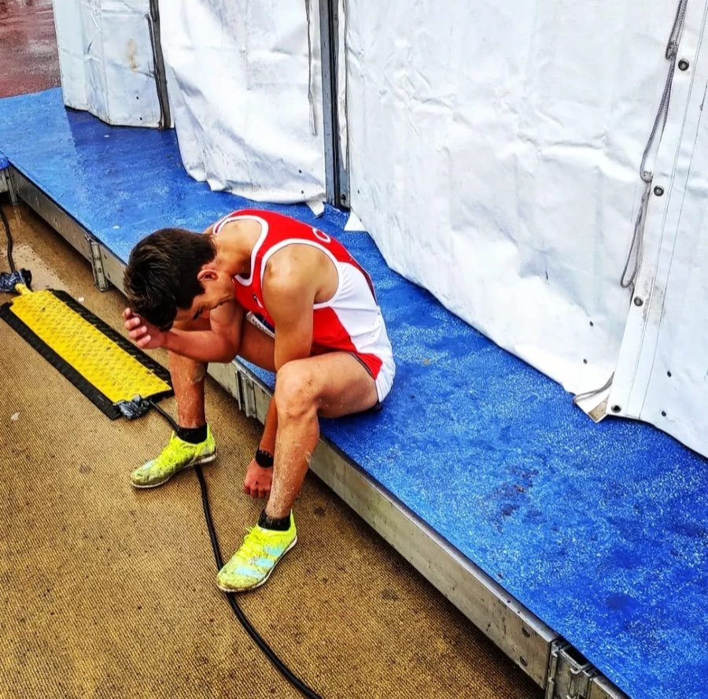
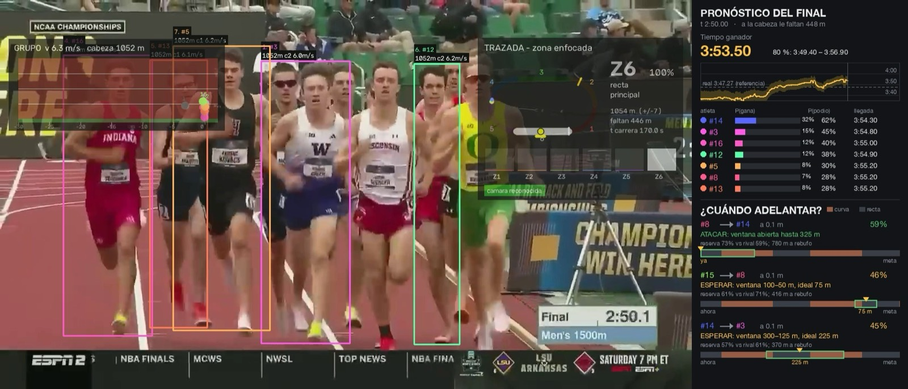

corrió el medallista de plata en la final de 800 m de Río 2016. El oro, 801,4 m. La diferencia está en las curvas.
Medido
Cada corredor en metros: por dónde corrió, cuánto le costó cada curva, dónde le convenía adelantar.
Comparable
Todas las pistas siguen el mismo reglamento: se mide igual en Chile que en un Mundial.
Accesible
Con video. Sin chips ni docenas de cámaras.
Demo · final de 1500 m varones · NCAA 2025
Hoy
El atleta y su entrenador ven dónde se ganó y dónde se perdió una carrera grabada.
Lo siguiente
Un celular en la tribuna, en vivo. Datos comparables entre clubes.
El sueño
Cualquier deporte con cancha oficial, y verlo en AR desde donde estés.
Todo lo que pasa en la cancha, en datos para todos.
Pruébenlo
Para las preguntas del jurado. Prototipo sobre la final de 1500 m NCAA 2025, video de TV.
Así se ve por dentro
Dónde está el grupo
Dónde está cada atleta
Quién compite
Atletas ocultos
Pronóstico del final
Cuándo adelantar
Qué falta
La pista se repite
Sin puntos únicos, seguimos el recorrido de la cámara para saber qué tramo ve. Acierta 86 de cada 100 veces.
Los corredores se tapan
Los seguimos cuadro a cuadro y les devolvemos su identidad cuando reaparecen.
Tiene que ser en vivo
Cada cálculo usa solo lo que ya pasó, nunca el futuro.
Hoy
Video grabado de una carrera: metros por corredor en una pista de 400 m.
Lo siguiente
Un celular en la tribuna, en vivo. Después, la señal de TV.
El sueño
Velódromo, patinaje y cualquier estadio del mundo.

de acierto al decir qué zona de la pista enfoca la cámara de TV. Cuando falla, es la zona vecina: ~10 m de error mediano.
Qué evidencia se suma
El cuerpo mide ~1,75 m
El alto de la caja es estable y da los píxeles por metro según la fila del pie: cuánto va adelante o atrás.
La calle mide 1,22 m
Contando líneas desde el pie hasta el bordillo sale la distancia a la cuerda, y de ahí los metros extra en curva.
Error en video sintético: 0,5 m adelante–atrás · 0,33 m lateral
Fuera de los gráficos de TV
Nadie corre dentro del marcador o del logo.
Pies sobre el tartán
Descarta público, jueces en el pasto y camarógrafos.
Tamaño parecido al grupo
Descarta personas lejanas o pegadas a la cámara.
Nunca más atletas que en la serie
Tras un corte, un "nuevo" es alguien ya conocido.
Física plausible
Un salto imposible suelta el ID en vez de inventar.
de error al pronosticar el tiempo ganador en los últimos 200 m de la final, en vivo.
3,5–6,9 s de error en la primera mitad
3.000 simulaciones por cuadro: crucero + sprint final
Intervalos todavía angostos: cubren ~40 % en vez de 80 %
Atacar ya
El fondista, con más reserva y menos sprint, solo gana si ataca ahora.
Esperar
El velocista gana si espera a la recta: ideal a 275 m, sin costo de curva.
Mantener
Entre iguales no hay ventana: mejor seguir a rebufo.
| Pieza | Funciona | Falta |
|---|---|---|
| Zona de la pista | 86,5 % de acierto, causal | Probar con otra carrera |
| Cada atleta | 0,5 m y 0,33 m en sintético | Validar con video real etiquetado |
| Quién compite | Descarta público, jueces y gráficos | Re-identificar por dorsal |
| Pronóstico | 1,0 s en los últimos 200 m | Calibrar con varias finales |
| Adelantamiento | Correcto en los tests | Validar con carreras reales |